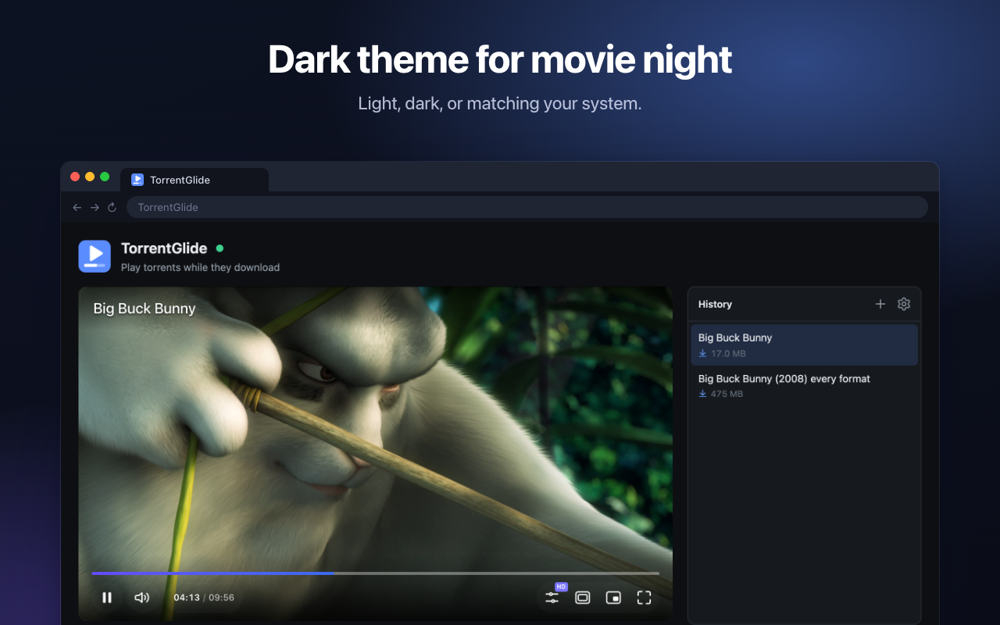

Reproduire des torrents dans votre navigateur pendant leur téléchargement
Cliquez sur un lien magnet ou .torrent et commencez à regarder en quelques secondes. MKV, HEVC et sous-titres inclus. Aucun compte, rien envoyé : le torrent s’exécute sur votre propre ordinateur.
Tous les téléchargements
Comment ça marche
Elle capture les liens de torrents
Cliquez sur un lien magnet ou .torrent sur un site quelconque et choisissez « Ouvrir le lien dans TorrentGlide », ou laissez le navigateur le traiter comme d’habitude.
Votre ordinateur le télécharge
Le service torrent, le gratuit et open source rqbit, rejoint le swarm sur votre ordinateur et récupère d’abord les pièces sous la tête de lecture.
Vous regardez immédiatement
Le lecteur décode MKV, HEVC, AVI et plus dans le navigateur, avec des sous-titres et des packs de saison. Avancez sans attendre le reste.
Captures d’écran




Conçu pour la vie privée
Aucun compte, aucun serveur entre les deux, aucun suivi. L’extension ne parle qu’au service torrent sur votre propre ordinateur, et cette page n’a aucun outil d’analyse ni cookie.